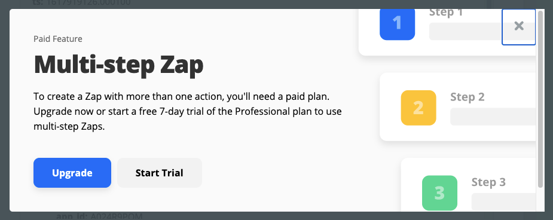
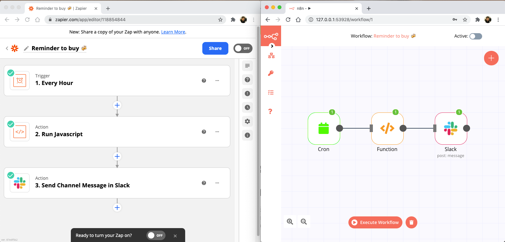
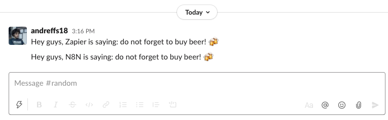

Update 2021-05-23: Decided to split this post into 3 different ones to be more easily read. You can find the other two here: “Observability on n8n” and “n8n customizations for Production”.
So at my company we started using n8n to setup some MVP’s, build workflows and glue together some of our internal tools in order to automate some of our processes.
In this post I’m going to go over how we’ve deployed n8n on our Kubernetes Cluster.
What is n8n
Simply put, n8n is a free, extendable workflow automation tool, with a fair-code distribution model. If you already know no/low-code tools like Zapier or IFTTT, then n8n is pretty similar, and you can run it on your own.
Being fair-code means that the source code will always be shared, and you are free to use. The only caveat is if you make money with n8n, then you might need to pay a license for using it. This thread on the community forum has good examples on why this model is different from the traditional “open-source” projects.

Under the hood it’s a NodeJS web server that runs workflows. Since its inception (~June 2019) it already has +280 Nodes and +500 Workflows available. The community is very active as well, usually a fix takes a couple of days to get merged and deployed, which is very cool!
This means that you can self-host n8n very easily. There is also n8n.cloud, the paid hosted version which you wont have to worry about scale, security or maintaining it by yourself.
Why use n8n and not Zapier?
Well, for me, the high cost. 💸
Zapier is amazing and will probably work for whatever use-case throw at it, but over time the free tier just doesn’t work. You hit your “zap” limits very quickly and you can only create very simple “two-step” flows. More complex flows are only available for paying customers.

Also, its not on “your environment” (no on-premiss deployment/self-hosted) which might be a problem if you have strict rules in place, like sharing data with third party vendors. Zapier is enterprise ready, which means they will probably give you amazing customer support and all the features you need, you just need to 💰.
If don’t mind setting up and managing your own instance (availability, scalability, durability, etc) then n8n will work as good as any of the non-free competitors.
Example of a workflow between Zapier vs n8n
To illustrate the different between Zapier and n8n, here is a simple workflow comparison. Both workflows do the same thing:
👉 Every hour, build a custom message and post it under my #general slack channel.
This is just a simple workflow that allow us to quickly see the main differences.
For this to work we need:
- Some sort or routine/cronjob step, that is triggered every hour;
- A step to build our custom message;
- A slack integration to post our message.

Executing both workflows, we get the expected message on our slack channel:

But, the goal of this post is to not talk about why you should use n8n or Zapier, its actually to show you how we’ve setup n8n on our Kubernetes cluster.
So without further ado…
How to setup n8n in Kubernetes
Instead of coming up from scratch with the whole Kubernetes configuration, we will be using the examples provided by @bacarini, a member of n8n’s community forum that shared his configuration, and a really good friend of mine.
The overall architecture will look something like the following:
Once we have Minikube installed, we can start the cluster by running the following command:
|
|
n8n Deployment
Following the diagrams above, we will start with the n8n Deployment configuration and exposing it with its Service configuration:
|
|
|
|
Important notes here:
- We assigned a
&labelsvariable to help us from copy&pasting the same labels everywhere inside the same .yaml configuration (this is replicated across most of our configurations); - We are setting the n8n container port to 5678 on our n8n-deployment.yaml file, which maps to n8n default port. The container is exposed by our n8n-service.yaml on port 80 (http) by redirecting traffic from there to the containers targetPort.
- Both our n8n-configmap.yaml and n8n-secrets.yaml are associated with our n8n container, although we still need to create them. We’ll do that shortly.
- n8n provides a /healthz endpoint to check if the service is up and running. We take advantage of that endpoint to configure our deployment Liveness and Readiness Probes;
- Finally, we top the resources of our container to use at best 1 CPU and 1Gbi of memory of our cluster.
Special attention to the selector on the n8n-service.yaml configuration which must match the same labels on the n8n-deployment container, otherwise we wont be able to reach our n8n server.
To read more about selectors and how they work with Deployments you can go here: https://kubernetes.io/docs/concepts/workloads/controllers/deployment/#creating-a-deployment
So, applying both those configurations we will have the following:
|
|

If you went ahead and checked our pod (
$ kubectl get pods), you will see that it is in a “CreateContainerConfigError” state. This is because we are still missing our ConfigMap and Secrets configuration. We will fix that soon.
PostgreSQL StatefulSet
Very similar to our Deployment configurations before, the Postgres Statefulset configuration is as follows:
|
|
|
|
The main differences as you can see are:
- The port that we are exposing now, both in our postgres-statefulset.yaml and postgres-service.yaml is 5432, which is the default port for a PostgreSQL server.
- Like the configuration before, special attention to the service selector which must match the labels on the stateful set container.
Applying both k8s configurations, and we have the following:
|
|

ConfigMaps & Secrets
To tie these together we just need to bootstrap all default configurations for both n8n and PostgreSQL:
- Our n8n Deployment is linked to a ConfigMap by the name “n8n-configmap” and a Secrets configuration named “n8n-secrets”;
- The Postgres Statefulset is just by a Secrets configuration named “postgres-secrets”.
|
|
|
|
|
|
All these configurations are pretty standard, and most of them are copy&pasted from the example given by @bacarini or by n8n documentation, but again the important part is:
- the “ DB_POSTGRESDB_HOST” on the n8n-configmap.yaml configuration must match the service name for our PostgreSQL service.
Also, we need to update our WEBHOOK_TUNNEL_URL environment. This will be used mostly to call webhooks but it needs to be a valid host url, so it wont work.
Following n8n FAQ’s they suggest to use ngrok and setup that url, but I found out that you can simply setup that config with the result of $ minikube service n8n-service --url and that will work without any extra service running on your computer.
|
|
Now, we can just apply all 3 configuration files, and restart both Deployment and Statefulset so these configurations are reloaded:
|
|
“n8n <> postgres” service
When creating a Service in Kubernetes, we can reach that Service by using its fully qualified domain name (FQDN) or, if the service is in the same namespace, just its service name.
For example, our postgres-service can also be reached by postgres-service.default.svc.cluster.local.
👉 Its with this name that our n8n pod will communicate with our PostgreSQL database.
To learn more about service names in Kubernetes and its rules, check this: https://kubernetes.io/docs/concepts/services-networking/dns-pod-service/
All together now 🚀
If you have been saving those configurations above you should have something like this in your working directory:
|
|
You could just deploy all configurations as a whole by simply running
$ kubectl apply -f .
So the moment we’ve been working for: to open our n8n server on our browser!
|
|

And like that, you have n8n running in your own Kubernetes Cluster!! 🤩
Resources
- n8n open-source vs fair-code: https://docs.n8n.io/reference/faq.html#which-license-does-n8n-use
- Examples on fair-code use: https://community.n8n.io/t/doubts-about-fair-code-license/2502
- How Kubernetes selector works: https://kubernetes.io/docs/concepts/workloads/controllers/deployment/#creating-a-deployment
- Kubernetes Service Names: https://kubernetes.io/docs/concepts/services-networking/dns-pod-service/
- Liveness and Readiness probes: https://kubernetes.io/docs/tasks/configure-pod-container/configure-liveness-readiness-startup-probes/
👋